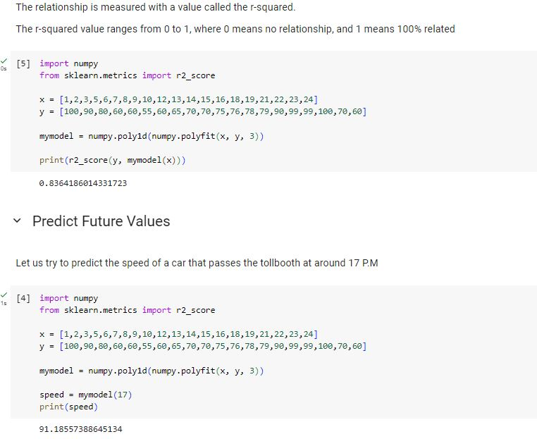
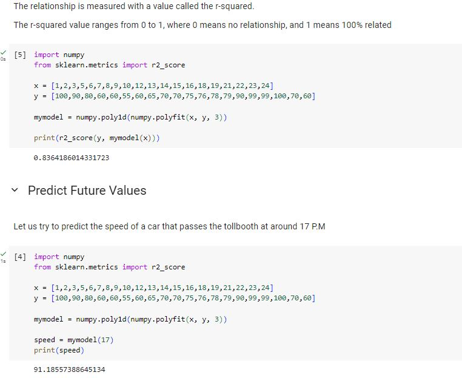

18 cars passing a certain tollboth at different time of the day (x) with different speed (y)
The relationship is measured with a value called the r-squared. Our r-squared value in the example is 0.8364186014331723
Unit 3 covered the statistical concepts of covariance, Pearson correlation, and various forms of regression analysis, including linear, multiple linear, and polynomial regression.
The module’s practical exercises were crucial in understanding the differences of data relationships. Learning about covariance and Pearson correlation helped me grasp the strength and direction of the relationship between two variables. Regression analysis, from simple linear to multiple and polynomial, equipped me with the tools to model and predict outcomes based on data. These skills are essential for any data scientist to make accurate predictions and derive meaningful insights from data.
Reflecting on this module, I recognize the importance of these statistical methods in my future career as a data scientist. I plan to continue practicing these techniques, applying them to larger and more complex datasets. I am also motivated to explore further into machine learning and artificial intelligence, building on the strong foundation this module has provided.
While covariance provides information about the direction of the relationship, correlation goes further by standardizing results and providing insights into both direction and strength. Correlation is often preferred due to its ease of interpretation and consistent scale.
Covariance is a statistical measure that quantifies the degree to which the deviations of two variables from their means are related
Correlation measures both the direction and strength of the linear relationship between two continuous variables. Unlike covariance, correlation results are standardized, falling between -1 and 1.
Is used in situations where the relationship between the independent variable(s) and the dependent variable is non-linear.
18 cars passing a certain tollboth at different time of the day (x) with different speed (y)
The relationship is measured with a value called the r-squared. Our r-squared value in the example is 0.8364186014331723
If a scatterplot of the data shows a curved pattern, this suggests that a non-linear model, like polynomial regression, may be more appropriate than a simple linear regression.